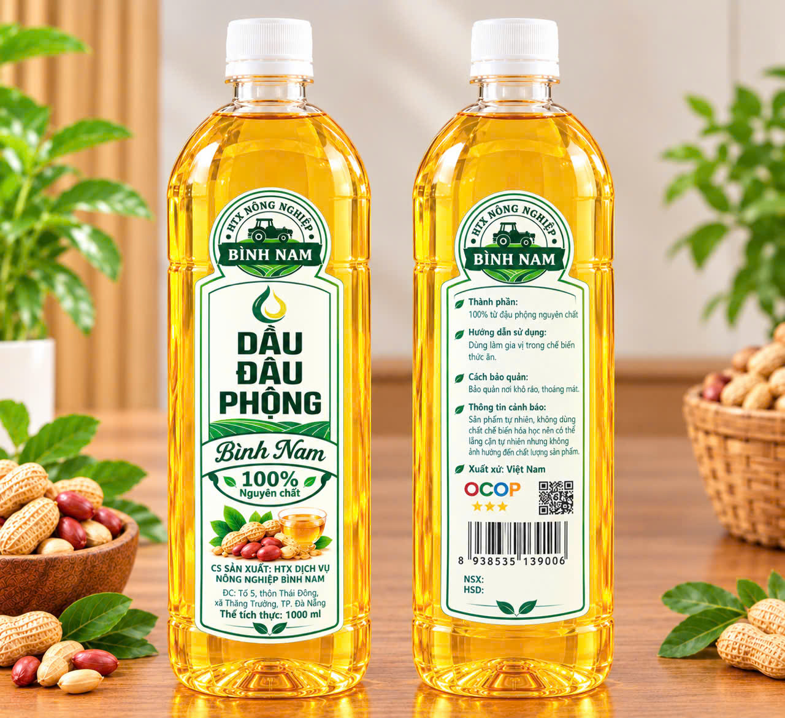
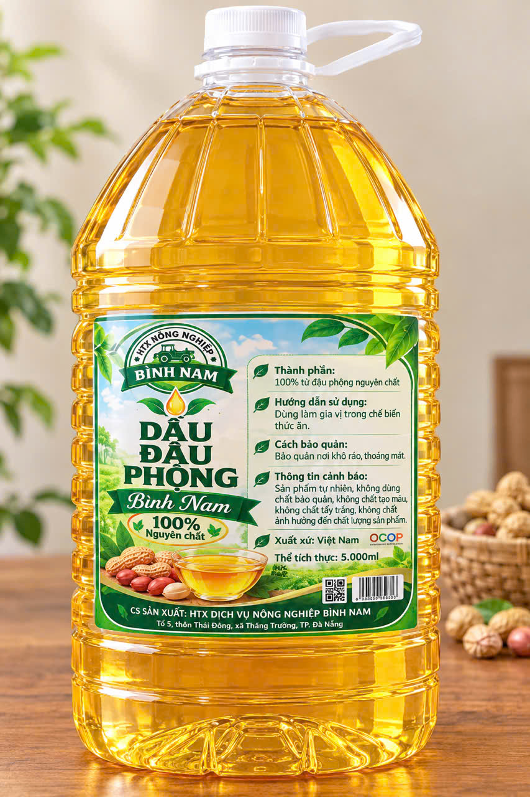

Dầu đậu phộng nguyên chất
Vàng óng từ hạt đậu phộng quê
Ép từ 100% hạt đậu phộng nguyên chất, giữ trọn vị béo bùi của đồng quê. Dùng làm gia vị cho mọi bữa cơm nhà.
OCOP 3★
100% nguyên chất

Ép từ 100% hạt đậu phộng nguyên chất, giữ trọn vị béo bùi của đồng quê. Dùng làm gia vị cho mọi bữa cơm nhà.
HTX Dịch vụ Nông nghiệp Bình Nam có gốc ở vùng quê Thăng Bình, nay thuộc TP. Đà Nẵng. Chúng tôi làm một việc đơn giản: ép dầu từ hạt đậu phộng và hạt mè đen, không thêm chất chế biến hóa học. Mỗi chai dầu đều qua những công đoạn làm kỹ, từ chọn hạt đến lắng lọc tự nhiên. Dầu đậu phộng của HTX đạt OCOP 3 sao và đã qua kiểm nghiệm 16 chỉ tiêu. Chúng tôi mong bữa cơm nhà bạn thêm đậm đà.

Hai dòng dầu, năm quy cách. Chọn chai vừa đủ cho bếp nhà bạn.
Gọn nhẹ, đủ cho bếp nhà.
Phù hợp: gia đình nhỏ, bữa cơm hằng ngày
Đầy chai, cho bếp dùng đều tay.
Phù hợp: gia đình đông người, bếp nấu thường ngày

Đủ đầy cho bếp lớn.
Phù hợp: bếp ăn, quán ăn, nhà hàng nhỏ

Một chai nhỏ, thơm cả bữa.
Phù hợp: gia đình nhỏ, người mới dùng dầu mè đen

Hương mè đậm, dùng cả nhà.
Phù hợp: gia đình, bếp ăn cần dầu mè đen thường xuyên
Sản phẩm ép từ hạt nguyên chất, không dùng chất chế biến hóa học nên có thể có lắng cặn tự nhiên. Điều này không ảnh hưởng đến chất lượng.
Đậu phộng nhẹ nhàng, mè đen đậm đà. Chọn dòng nào tùy món bạn nấu.
Cả hai đều là dầu ép nguyên chất, dùng làm gia vị chế biến thức ăn, bảo quản nơi khô ráo, thoáng mát.
Chúng tôi công khai giấy chứng nhận và phiếu kiểm nghiệm để bạn tự xem.
| STT | Chỉ tiêu | Kết quả |
|---|---|---|
| 1 | Carbohydrate | Không phát hiện |
| 2 | Năng lượng | 899 kcal/100g |
| 3 | Béo tổng | 99,9 % |
| 4 | Đạm tổng | Không phát hiện |
| 5 | Tạp chất không tan | Không phát hiện |
| 6 | Asen (As) | Không phát hiện |
| 7 | Cadimi (Cd) | Không phát hiện |
| 8 | Thủy ngân (Hg) | Không phát hiện |
| 9 | Chì (Pb) | Không phát hiện |
| 10 | Aflatoxin B1 | Không phát hiện |
| 11 | Aflatoxin tổng (B1, B2, G1, G2) | Không phát hiện |
| 12 | Ochratoxin A | Không phát hiện |
| 13 | Aldicarb | Không phát hiện |
| 14 | Methoxyfenozide | Không phát hiện |
| 15 | Penthiopyrad | Không phát hiện |
| 16 | Propargite | Không phát hiện |
Kết quả trên áp dụng cho mẫu thử được nêu trong phiếu. Phiếu gốc có đầy đủ phương pháp thử.
Năm bước làm kỹ, để mỗi giọt dầu giữ được hương vị của hạt.
Chúng tôi chọn những hạt đều, chắc để làm nguyên liệu cho từng mẻ dầu.
Hạt được làm sạch tạp chất, phơi khô hoặc rang theo quy trình để giữ hương tự nhiên.
Hạt được ép lấy dầu nguyên chất, không thêm chất chế biến hóa học.
Dầu được để lắng tự nhiên. Phần cặn tự nhiên sẽ xuống đáy, phần dầu trong được giữ lại.
Dầu được rót vào chai hoặc can, dán nhãn rồi đưa đến tay bạn.
Quê nhà Bình Nam nằm ở vùng Thăng Bình, Quảng Nam, nay thuộc TP. Đà Nẵng. Nơi đây, hạt đậu phộng và hạt mè đã đi cùng bữa cơm, cùng những buổi chiều ngồi bên hiên nhà. Với người dân quê, đó không chỉ là hạt. Đó là kỷ niệm, là nếp sống và là niềm tin. Ở nơi ấy, người ta sống chậm rãi và trọng nghĩa tình.
Hợp tác xã Dịch vụ Nông nghiệp Bình Nam ra đời từ một mong muốn giản dị: làm sao để hạt quê có thêm giá trị, để bà con có chỗ dựa, và để người tiêu dùng được ăn loại dầu tự nhiên, rõ nguồn gốc. Chúng tôi không vội lớn. Chúng tôi chọn làm kỹ từng khâu, từ chọn hạt, ép dầu, lắng lọc cho đến khi chai dầu đến tay bạn.
Mỗi chai dầu của Bình Nam mang theo công sức của những người làm nghề. Dầu đậu phộng đã được UBND huyện Thăng Bình công nhận đạt OCOP 3 sao, và đã qua kiểm nghiệm 16 chỉ tiêu. Điều đó khiến chúng tôi tự hào. Nhưng niềm vui lớn nhất vẫn là khi bạn nấu một bữa cơm thơm, rồi mỉm cười nói: "Dầu này ngon quá."
Từ hạt đậu phộng, hạt mè đến chai dầu trên bàn bếp, chúng tôi vẫn giữ một lời hứa: nguyên chất, minh bạch và đáng tin. Chúng tôi mong mỗi lần mở nắp chai, bạn đều thấy yên tâm. Hãy cùng Bình Nam giữ lại vị quê ấy trong từng bữa cơm nhà bạn.
Giữ cái gốc của hạt quê, đó là cách chúng tôi làm nên từng giọt dầu.
Ba gợi ý nhanh cho bữa cơm nhà, dùng chính dầu của bạn.
Rau giòn xanh, vị béo nhẹ của dầu đậu phộng làm nền cho cả mâm cơm.
Món trộn thanh mát, chỉ cần rưới một chút dầu mè đen là đậm đà hẳn lên.
Bát cháo nóng hổi, vài giọt dầu mè đen là thơm cả nhà.
Chưa thấy câu bạn cần? Hãy để lại lời nhắn ở mục Liên hệ.
Có thể có. Dầu được ép từ hạt nguyên chất và không dùng chất chế biến hóa học, nên đôi khi có lắng cặn tự nhiên. Điều này không ảnh hưởng đến chất lượng. Bạn chỉ cần để yên cho cặn lắng xuống đáy trước khi rót.
Bảo quản nơi khô ráo, thoáng mát, tránh nắng trực tiếp và nơi ẩm. Đậy kín nắp sau khi dùng.
Sản phẩm được HTX định vị là dầu dùng làm gia vị chế biến thức ăn. Hiện chúng tôi chưa có thông tin riêng về việc chiên rán ở nhiệt độ cao. Nếu bạn cần tư vấn cho món chiên rán, vui lòng gọi [Cập nhật SĐT] để được hỗ trợ.
Dầu tinh luyện thường qua nhiều công đoạn xử lý nên trong và ít cặn hơn. Dầu Bình Nam được ép từ 100% hạt nguyên chất, không dùng chất chế biến hóa học, nên giữ hương vị gần với hạt. Đổi lại, đôi khi có chút cặn tự nhiên.
Bạn có thể liên hệ trực tiếp với HTX qua số [Cập nhật SĐT] hoặc email [Cập nhật email]. Bạn cũng có thể để lại thông tin trong mục Liên hệ / Đặt hàng trên trang này, chúng tôi sẽ phản hồi sớm nhất.
Phạm vi và cách giao hàng sẽ được HTX tư vấn cụ thể khi bạn liên hệ. Vui lòng gọi [Cập nhật SĐT] hoặc để lại lời nhắn trong form đặt hàng.
Để lại vài dòng, HTX sẽ liên hệ tư vấn quy cách phù hợp với bếp nhà bạn.
Cảm ơn bạn! HTX đã nhận được thông tin và sẽ liên hệ lại sớm nhất.